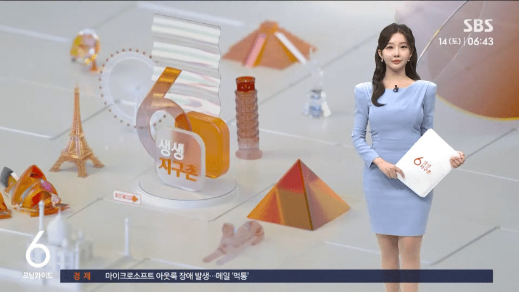
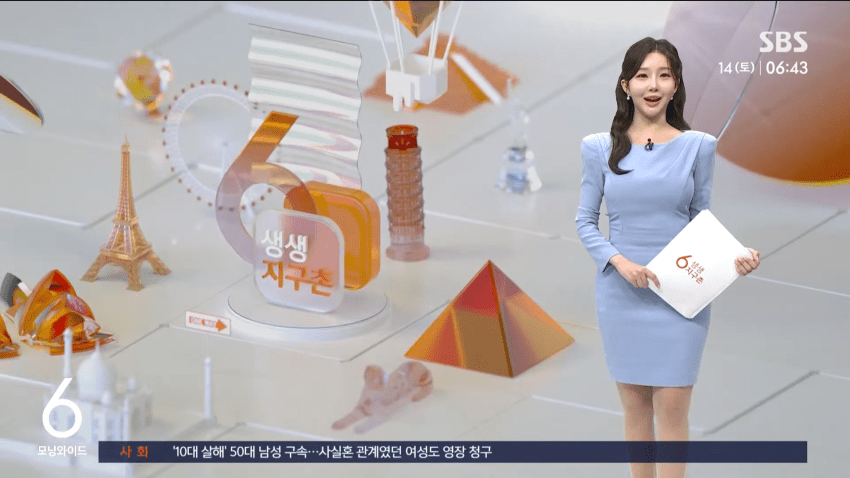
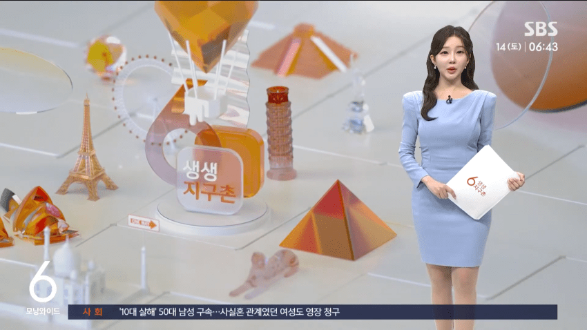
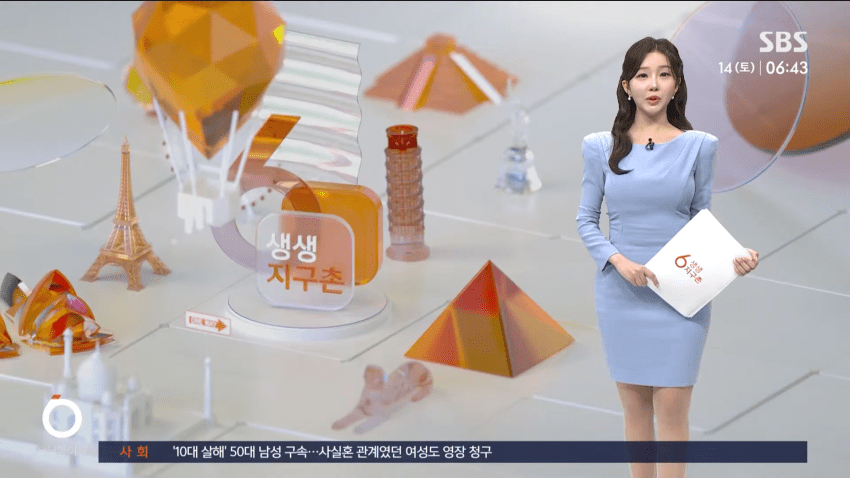
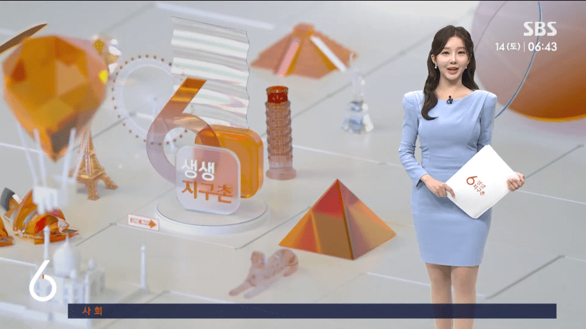
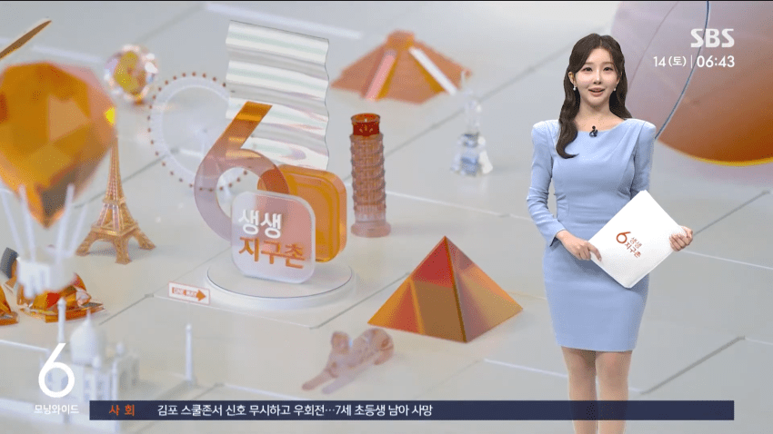
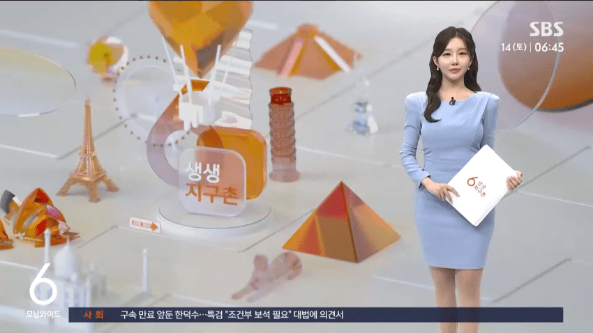
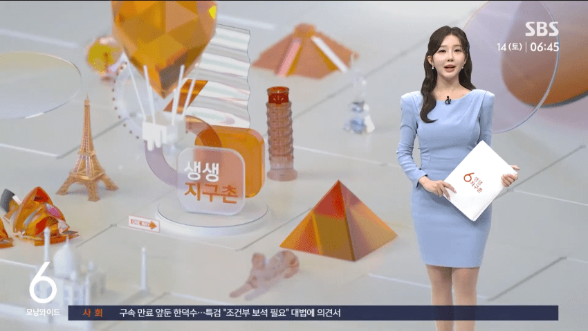
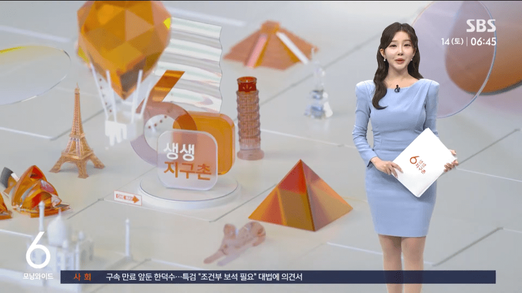
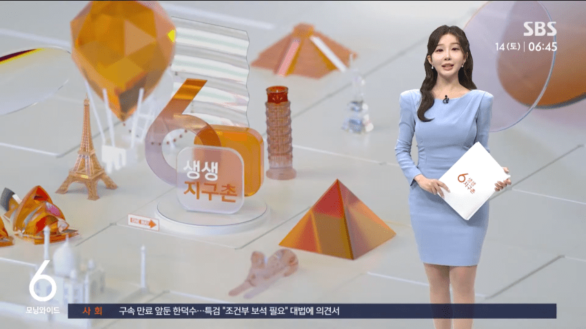
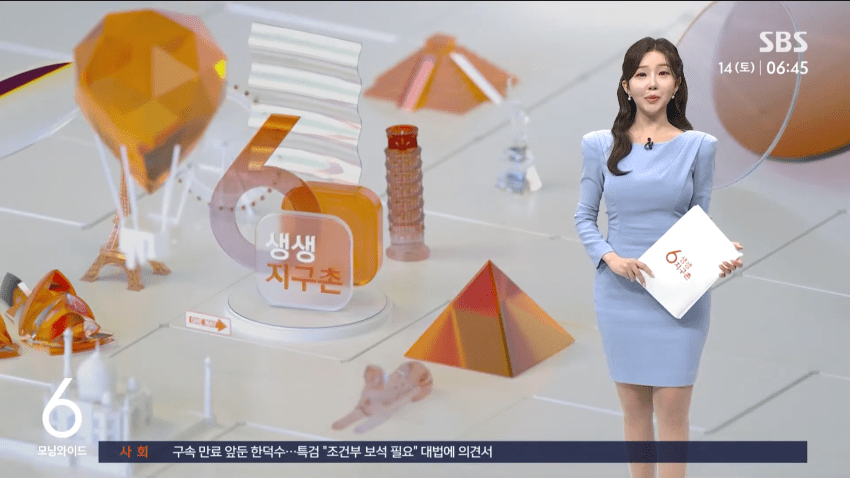
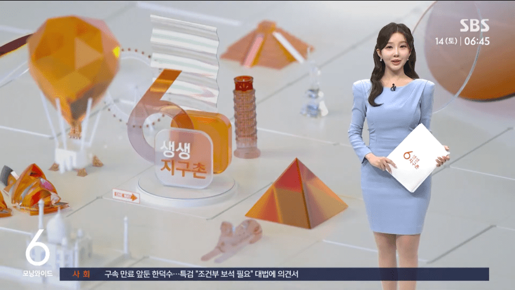
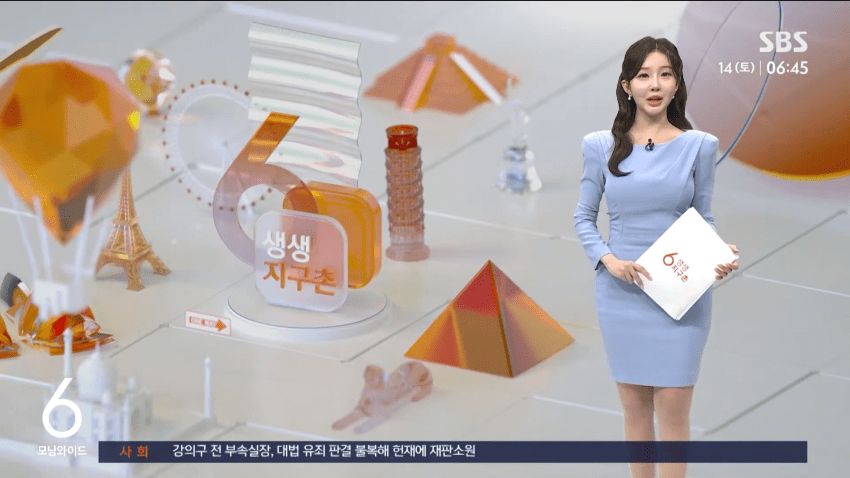
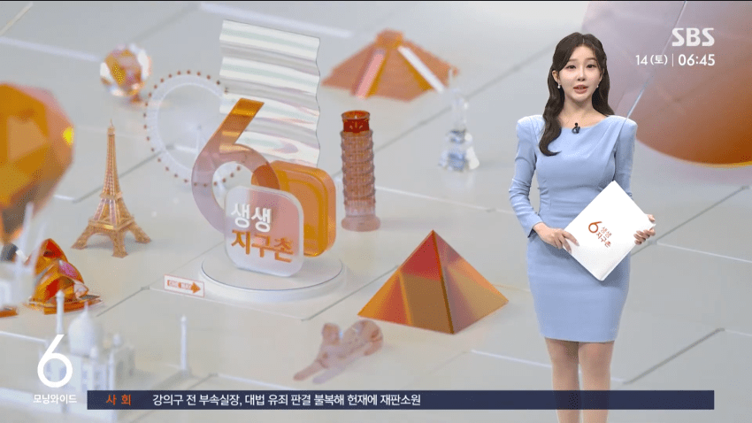
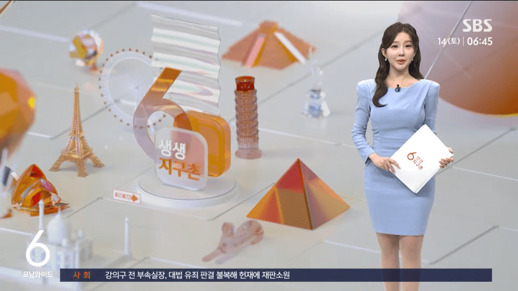
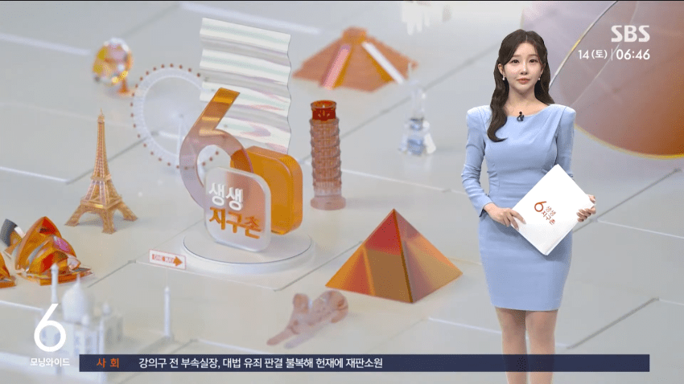
















댓글
수집 당시 댓글 20개
아갤러1 · 11.14 22:40:06
ㅇㅇ · 11.15 10:02:48
Ai도태 되지말자
· ㅇㅇ · 11.15 10:02:53
시험도태는공정?
AI도태는부정?
· ㅇㅇ · 11.15 10:02:59
우리아이ai도태된다ai안경사주자
· ㅇㅇ · 11.15 10:03:08
Ai도태
ㅇㅇ · 11.15 10:05:32
mango · 11.15 10:06:50
익명 · 11.15 10:07:00
ㅇㅇ · 11.15 10:07:08
ㅇㅇ · 11.15 10:07:59
ㅇㅇ · 11.15 10:11:56
· ㅇㅇ · 11.15 12:49:05
ㅇㅇ · 11.15 10:26:16
ㅇㅇ · 11.15 10:28:48
ㅇㅇ · 11.15 10:39:56
micro멍거 · 11.15 10:44:55
ㅇㅇ · 11.15 10:52:39
ㅇㅇ · 11.15 11:27:31
ㅇㅇ · 11.15 14:25:15
ㅇㅇ · 11.15 15:32:38